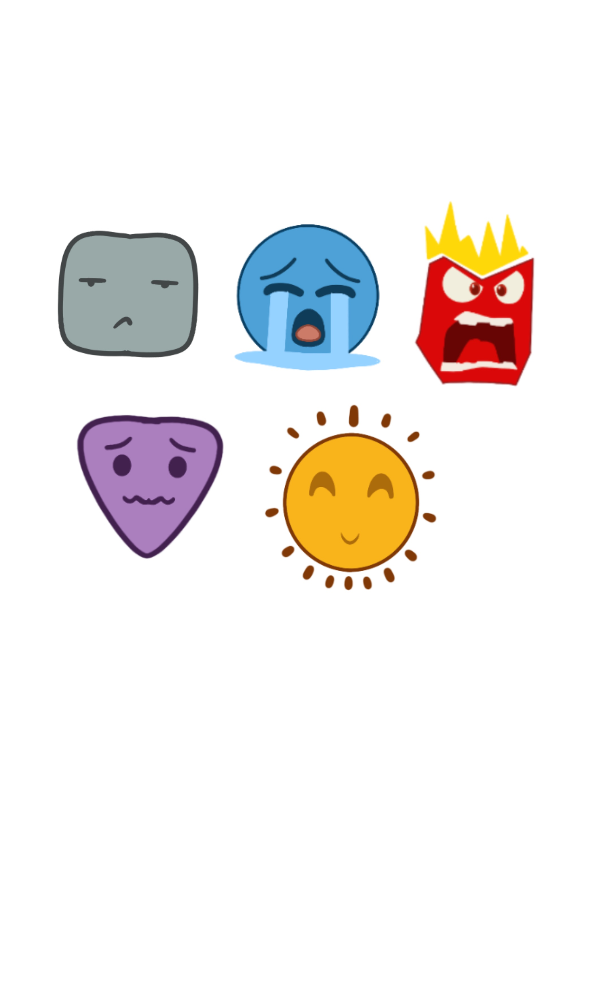

Discover the journey of mapping emotions through visual experiences.
Welcome to my Harmonic Collection, where I explore the theme of "Emotional Cartography." Each entry represents a unique journey of mapping emotions through visual experiences, locations, and inspirations. Dive into each entry to explore how different spaces evoke different feelings.